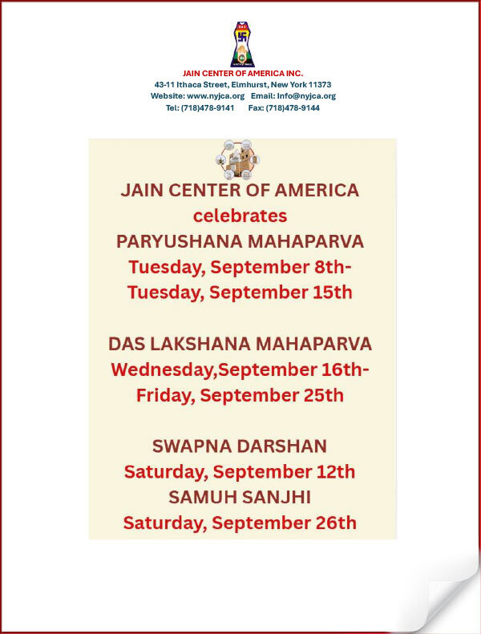
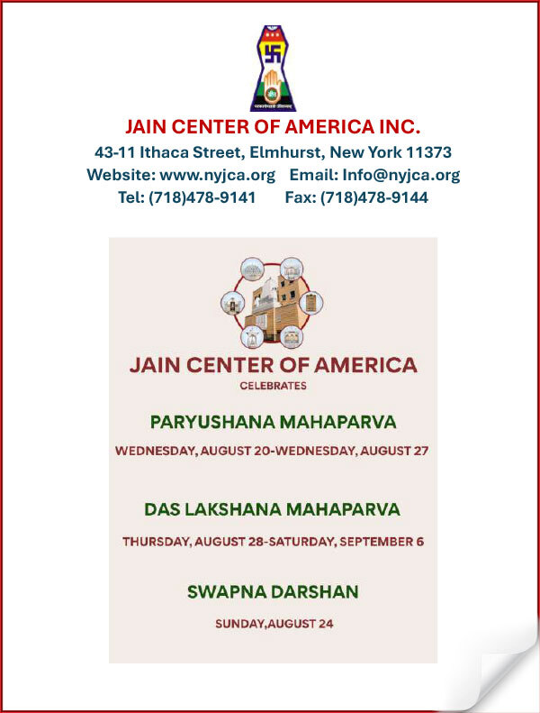
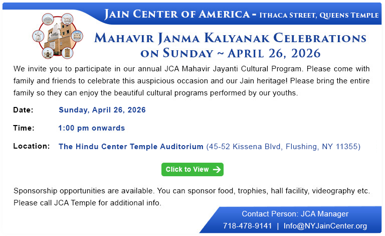

A Year Told in Festivals
A daily rhythm of aarti and darshan, a weekly Pathshala, and a handful of days each year when the whole sangha gathers.
Tap a Day, Find a Festival
Days with an event — select one to see its details below.
Paryushan & Das Lakshan Maha Parv
Nine days of fasting, pratikraman, and pravachan across every tradition represented at JCA, culminating in Samvatsari — the day of universal forgiveness, when the sangha asks and offers "Micchami Dukkadam" to all beings.
Nine Days, One Forgiveness
Paryushan is the one week every tradition at JCA observes together — each in its own shrine, in its own way, meeting at Samvatsari.
Latest from the Center
Read about our latest news and events.

Paryushan 2026 · Download newsletter
Paryushan 2025 · Download newsletter
Mahavir Janma Kalyanak · April 26, 2026Every Issue, Kept on the Shelf
Read and download our latest newsletters.
Sign up to receive information about our latest News & Events
Festival dates, community news, Pathshala updates, and what's new at the temple — once a month, nothing more.